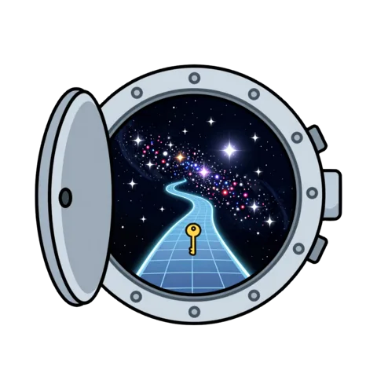

Your Valkey cluster, as one server.
ValkeyWay is a proxy in front of a Valkey cluster. Applications and tools that only talk to a single server connect to it unchanged, with any Valkey or Redis client, while the data lives in the cluster.
Open source under the MIT license. Latest release: 0.2.0.

Run it in front of your cluster
Point it at a few of the cluster's nodes and connect as you would to a single server.
$ docker run -d --name valkeyway -p 6379:6379 -p 6380:6380 \ ghcr.io/nslootsky/valkeyway:latest \ --proxy.cluster-nodes=node1:7000,node2:7001,node3:7002 $ valkey-cli MSET key1 a key2 b key3 c # keys on different nodes OK $ valkey-cli MGET key1 key2 key3 # one reply 1) "a" 2) "b" 3) "c"
Clients connect on port 6379. Port 6380 serves health checks and Prometheus metrics. Only the seed nodes are required; every other setting has a default, described in the configuration reference.
The image is published for linux/amd64 and linux/arm64. The jar runs on Java 25.
One address, the whole cluster behind it
Each command goes to the node that holds its keys, and redirects are followed. A multi-key command whose keys sit in different slots is split, sent to each node, and answered as one reply.
Clients see a standalone server: the same replies, over RESP2 or RESP3, checked byte for byte against real nodes and against Valkey's own test suite.
What works
Most applications see no difference from a standalone server.
- Cross-slot commands
- MGET, MSET, DEL and other multi-key commands, which a cluster rejects with
CROSSSLOT, just work. - Multiple databases
- SELECT per connection, on clusters with numbered databases: Valkey 9, including Amazon ElastiCache.
- Transactions and WATCH
- Atomic when a transaction's keys share a slot. SCAN covers the whole cluster.
- Pub/Sub
- Channels, patterns and sharded channels, with RESP2 and RESP3 clients.
- Fast
- Pipelines and concurrent clients' commands are batched to the cluster: 200–290k requests/s unpipelined and about 620k pipelined, measured on one 24-core machine.
- Survives cluster changes
- Slot migrations, new shards, failovers, and a seed DNS name pointed at another cluster.
- Secure when you need it
- Client passwords, TLS for clients, and TLS with credentials to the cluster. All off by default.
- Observable
- Health checks and Prometheus metrics on a separate port.
Where it runs
- Self-managed clusters
- Amazon ElastiCache
- Google Cloud Memorystore
Releases come with signed build provenance and an SBOM, so you can check that an image or jar was built from this repository: see verifying a release.
What it can't change
A cluster can't make one atomic operation out of keys in different hash slots, and neither can a proxy in front of it. Hash tags, such as {user1}:name and {user1}:email, keep keys that are used together in one slot.
Commands that administer a single node, such as SHUTDOWN or CONFIG SET, are refused by default. The compatibility notes list every difference from a standalone server.